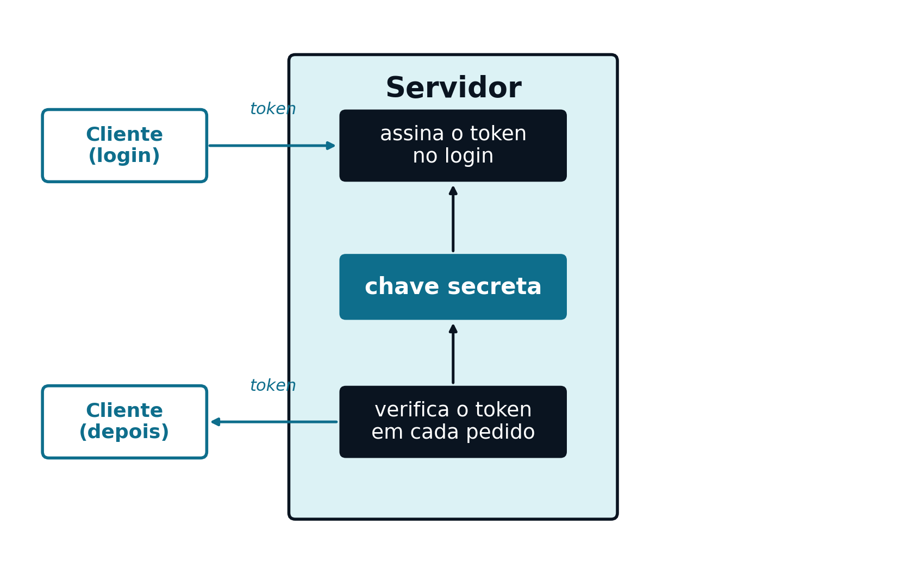
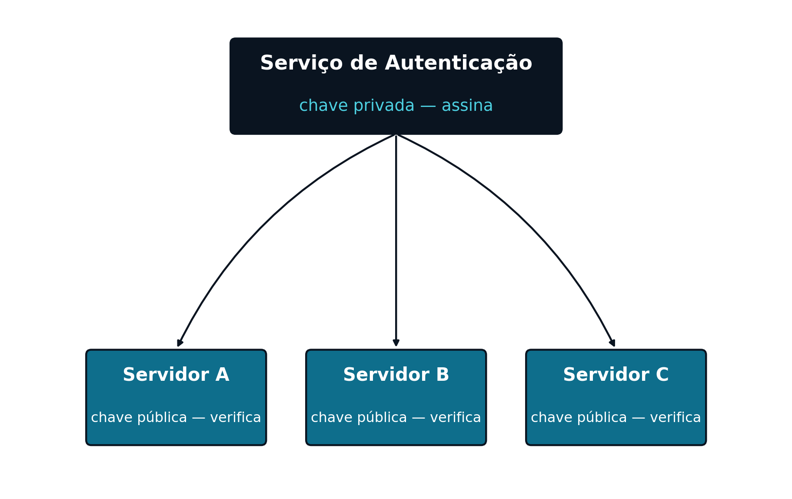

Apêndice B — Assinatura de Tokens JWT
B.1 Introdução
O Capítulo 8 mostrou como um JWT (ver Secção 8.3) é assinado e verificado, sem nunca aprofundar com que algoritmo, nem que garantias de segurança essa assinatura oferece. Este apêndice aprofunda especificamente essa questão: a assinatura de tokens.
B.2 HMAC: uma Chave Secreta Partilhada
O algoritmo usado no Capítulo 8, HS256, é a combinação de HMAC (Hash-based Message Authentication Code) com a função de resumo criptográfico SHA-256. É um algoritmo simétrico: a mesma chave secreta é usada tanto para assinar como para verificar um token.
Essa chave nunca é gerada no cliente, nem alguma vez viaja até ele: é criada e guardada exclusivamente no servidor (tipicamente uma única vez, na configuração inicial da aplicação), e nunca sai daí. O que o cliente recebe, e mais tarde reenvia, é sempre o token já assinado — o resultado de usar a chave — nunca a chave em si.

Isto funciona bem exatamente na situação apresentada ao longo desta UC: um único servidor (ou várias instâncias desse mesmo servidor, todas com acesso à mesma chave secreta, ver Secção 8.5) é, simultaneamente, quem emite os tokens e quem os valida. A chave nunca sai desse perímetro de confiança.
O inconveniente do HMAC aparece quando esse perímetro deixa de fazer sentido: se um sistema externo — que não deveria ter autoridade para emitir tokens válidos — precisasse de os validar, teria de receber a mesma chave secreta usada para os assinar. Nesse momento, deixa de ser só um verificador: passa a ser também capaz de forjar tokens novos, válidos, para qualquer utilizador.
B.3 RSA e ECDSA: um Par de Chaves
Um algoritmo assimétrico resolve este problema separando as duas capacidades em duas chaves distintas: uma chave privada, que só quem emite tokens conhece, e uma chave pública, correspondente, que pode ser livremente distribuída a quem precisar de os validar. O que a chave privada assina, só é possível verificar com a chave pública correspondente — mas não é possível assinar nada de novo apenas com a chave pública.
Os dois algoritmos assimétricos mais comuns em JWT são RS256 (RSA com SHA-256) e ES256 (Elliptic Curve Digital Signature Algorithm com SHA-256) — este último mais recente, com chaves mais pequenas e verificação mais rápida para um nível de segurança equivalente, cada vez mais preferido ao RSA em sistemas novos.

Este desenho é o habitual em sistemas compostos por vários serviços independentes (por vezes chamados microserviços): um único Serviço de Autenticação, responsável por validar credenciais e emitir tokens, e vários outros serviços, cada um deles a validar esses tokens de forma completamente autónoma, sem nunca comunicar entre si nem confiar uns nos outros para além da chave pública partilhada.
B.4 Escolher entre HMAC e Assinatura Assimétrica
HMAC (HS256) |
Assimétrico (RS256/ES256) |
|
|---|---|---|
| Nº de chaves | Uma só, partilhada | Duas: privada (emite) e pública (verifica) |
| Quem pode emitir tokens válidos | Qualquer um com a chave | Só quem tem a chave privada |
| Quem pode validar tokens | Qualquer um com a chave | Qualquer um com a chave pública |
| Cenário típico | Um servidor (ou cluster de confiança) emite e valida | Vários serviços independentes só validam |
| Desempenho | Mais rápido, mais simples | Mais lento, chaves maiores (exceto ECDSA) |
Para a aplicação “World Capitals” usada ao longo desta UC — um único servidor, responsável tanto por emitir como por validar os seus próprios tokens — o HMAC é uma escolha perfeitamente adequada, e é por isso que o Capítulo 8 o usa como exemplo. A escolha só passaria a pesar a favor de um algoritmo assimétrico se a aplicação crescesse para vários serviços independentes, cada um dos quais devesse poder validar, mas não emitir, credenciais de acesso.
B.5 O Ataque alg:none
O header de um JWT declara, ele próprio, qual o algoritmo usado na assinatura (ver Secção 8.3). A especificação original do JWT permite, entre os valores possíveis desse campo, o valor none — pensado para casos em que a integridade já é garantida por outro mecanismo, e nenhuma assinatura é sequer necessária.
Um verificador mal implementado, que confie cegamente no algoritmo declarado no header em vez de impor um algoritmo esperado, pode ser enganado por um token como este:
seguido de um payload arbitrário e de uma assinatura vazia. Se o código de verificação não rejeitar explicitamente o algoritmo none, um atacante pode construir, à mão, um token com qualquer payload que queira — por exemplo, {"sub":"admin","role":"admin"} — sem precisar de conhecer chave nenhuma, e o servidor aceita-o como legítimo.
É exatamente este ataque que motiva a recomendação já feita no Capítulo 8: uma biblioteca bem escrita, como a JJWT, exige que o algoritmo esperado seja indicado explicitamente no código de verificação, e rejeita qualquer token que declare um algoritmo diferente — incluindo none — independentemente do que o próprio token afirme sobre si mesmo.
B.6 Onde Guardar o Token no Cliente
Tudo o que foi visto até aqui protege o token contra falsificação — mas não contra roubo (ver Secção 8.2): quem o possui pode usá-lo livremente, como o seu legítimo dono, até ele expirar. O sítio onde o cliente o guarda entre pedidos determina a que tipo de roubo fica exposto.
- Guardar no
localStoragedo browser - Acessível a qualquer código JavaScript que corra na página — incluindo, infelizmente, um script malicioso injetado através de uma vulnerabilidade de Cross-Site Scripting (XSS). Se essa vulnerabilidade existir na aplicação, um atacante consegue ler o token diretamente e reenviá-lo, fazendo-se passar pelo utilizador. Não é, por outro lado, enviado automaticamente pelo browser em pedidos a outros sítios, por isso não fica exposto a Cross-Site Request Forgery (CSRF)
- Cookie
HttpOnly -
Marcado com o atributo
HttpOnly, um cookie fica inacessível ao próprio JavaScript da página — nem um script malicioso o consegue ler, o que neutraliza o roubo por XSS. Em troca, o browser reenvia automaticamente cookies em qualquer pedido dirigido ao domínio, mesmo quando esse pedido é despoletado por uma página de outro sítio — reabrindo a porta a CSRF, que passa a ter de ser mitigado à parte (por exemplo, com o atributoSameSite)
localStorage |
Cookie HttpOnly |
|
|---|---|---|
| Acessível a JavaScript | Sim | Não |
| Vulnerável a roubo por XSS | Sim | Não |
| Reenviado automaticamente pelo browser | Não | Sim |
| Vulnerável a CSRF | Não | Sim, exige mitigação à parte |
Nenhuma das duas opções é isenta de risco — cada uma troca um tipo de vulnerabilidade por outro. O modelo seguido no Capítulo 8 (token reenviado manualmente no cabeçalho Authorization, ver Secção 8.7) pressupõe que o token está acessível ao próprio JavaScript, o que aponta para localStorage, e é o mais comum em aplicações de página única modernas. Nesse modelo, prevenir XSS deixa de ser só uma boa prática geral: torna-se uma condição essencial para a segurança do próprio mecanismo de autenticação — ainda que a prevenção de XSS em si fique fora do âmbito deste apêndice.
B.7 Boas Práticas Mínimas
- Nunca aceitar o algoritmo do token às cegas — o código de verificação deve impor explicitamente o algoritmo esperado (ver Secção B.5)
- A chave secreta (HMAC) ou privada (RSA/ECDSA) nunca deve viver no código-fonte — deve ser lida de uma variável de ambiente ou de um gestor de segredos dedicado, nunca commitada num repositório
- Uma chave curta ou previsível anula a segurança do algoritmo — o comprimento mínimo recomendado depende do algoritmo, mas uma string curta e memorável nunca é apropriada
- Expiração curta (a claim
exp, ver Secção 8.4) limita os danos de um token comprometido, mesmo sem qualquer mecanismo adicional - HTTPS é sempre obrigatório — mesmo um token assinado corretamente é uma credencial válida se for intercetado em trânsito; a assinatura protege contra falsificação, não contra escuta da rede
Estas práticas são um ponto de partida, não um tratamento exaustivo de segurança de aplicações Web.